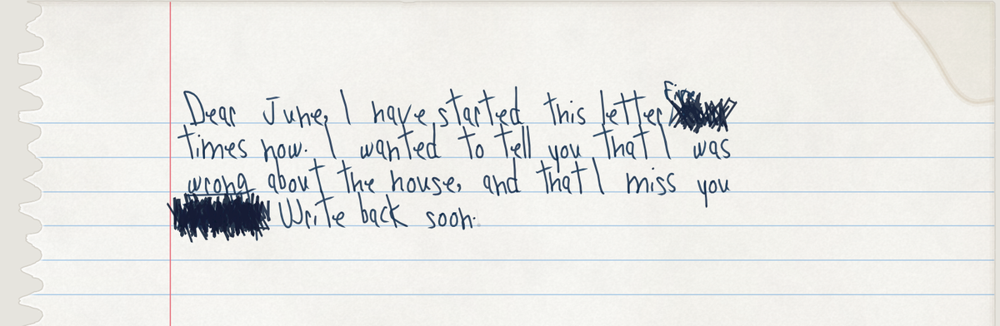

Bu sayfa OCR demosunun bir parçasıdır. Durum: 2. aşama, henüz yapılmadı. Tanıma için en zor durum budur: basılı değil, bitişik el yazısı.

Kaynak: if-this-finds-you yazı sayfası (MIT; ayrıntılar SOURCE.md dosyasında). Henüz okunmaz.